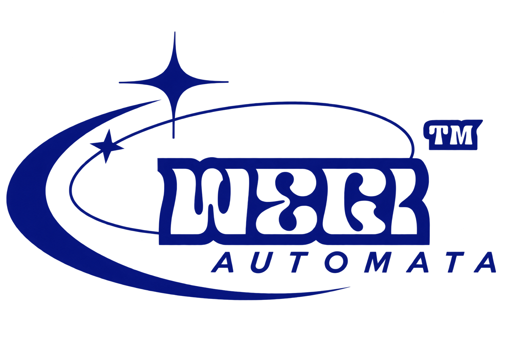

Web Experience
Web Experience / Front-End
PARADISE
Projeto desenvolvido com foco em identidade visual, navegação e experiência imersiva.
CSSJavaScriptGSAP
Interfaces que fazem a web ganhar vida.
Front-End, design e experiências digitais construídas para transformar ideias em interfaces memoráveis.

A WEGi trabalha na interseção entre desenvolvimento Front-End, design e experiência do usuário — cada interface é pensada como um sistema coeso, do pixel à interação.
Da estrutura à animação: um conjunto completo de serviços para dar forma e movimento à sua marca na web.
Interfaces construídas com código limpo, performático e fiel ao design.
Layouts visuais claros, hierárquicos e com personalidade própria.
Transições, efeitos e movimento que dão vida à interface.
Páginas de conversão pensadas para comunicar rápido e bem.
Experiências consistentes em qualquer tela, do mobile ao desktop.
Wireframes e fluxos testáveis antes de ir para produção.
Sistemas visuais coerentes entre marca, produto e interface.
Pequenos detalhes de resposta que tornam a navegação viva.
Um estúdio criativo onde design e desenvolvimento operam lado a lado — como um sistema, com janelas próprias para cada etapa.
Uma seleção de interfaces desenvolvidas com foco em identidade, navegação e experiência.
Projeto desenvolvido com foco em identidade visual, navegação e experiência imersiva.
Sistema de componentes modulares construído para escalar produtos digitais com consistência.
Página de lançamento com microinterações e scroll storytelling para produto tecnológico.
Um fluxo direto, em cinco etapas, do conceito à entrega final.
Entendemos o conceito.
Transformamos ideias em uma linguagem visual.
Construímos a interface.
Adicionamos movimento e personalidade.
Uma experiência pronta para a web.
O que diferencia uma interface qualquer de uma interface WEGi.
Detalhes visuais e desenvolvimento trabalhando juntos.
Interfaces pensadas para qualquer tela.
Animações, transições e estilos personalizados.
Cada projeto possui sua própria personalidade.
"[Espaço reservado para depoimento real de cliente.]"
"[Espaço reservado para depoimento real de cliente.]"
"[Espaço reservado para depoimento real de cliente.]"
* Depoimentos ilustrativos — nenhum cliente real foi citado. Substitua pelos feedbacks reais da WEGi.
Conte-nos o que você está imaginando. A WEGi transforma conceitos em experiências digitais.
Iniciar projeto →